Click a highlighted definition to read it here without losing your place. Follow section numbers alongside the original PDF.
Find lecture practice in this chapter (3)
- L0 · Course orientation
- L1 · Prove exactly which values belong
- L2 · Turn constructor cases into proof cases
Expand a practice panel for its example, Mermaid flow, and self-check.
Chapter cheat sheet
Main idea, definitions, and solving steps
The main idea: Define a set with construction rules, then use the same cases to prove properties of every member.
| Key term | Concise meaning |
|---|---|
| Inductive definition | The smallest set closed under the stated rules; nothing else belongs. |
| Base rule | Introduces a member without smaller premises. |
| Inductive rule | Constructs a member from previously established members. |
| Derivation | A finite tree showing how the rules justify membership. |
| Structural induction | Prove each constructor case, assuming the property for its immediate recursive parts. |
Rule to remember: Premises above the bar justify the conclusion below it. No premises means a base case.
Small example: For naturals generated by Zero and Succ(n), prove P(Zero), then P(n) ⇒ P(Succ(n)).
How to solve problems:
- List every constructor or rule.
- Handle the base cases.
- State hypotheses only for smaller recursive parts.
- Use those hypotheses to prove the constructed case.
Common trap: Testing a few examples does not prove a universal claim; a failed search is not automatically a nonmembership proof.
Read the chapter in the original PDF · Continue to the detailed sections
Syntax and code companion
Use the syntax reference to trace a symbol to its meaning and source.
Grammar and AST constructors · Patterns and recursive cases · Premises and conclusions
Line-by-line code · From a tree definition to structural recursion
Complete OCaml teaching example
type tree = Leaf | Fork of tree * treeLeaf is a base constructor; Fork contains two smaller trees.
let rec leaves = functionDefine a recursive function by cases.
| Leaf -> 1The base tree has one leaf.
| Fork (left, right) ->Bind the two recursive components.
leaves left + leaves rightCombine the smaller answers. The same constructor cases guide a structural proof.
Trace result: leaves (Fork (Leaf, Leaf)) = 2. This datatype is separate from each homework's supplied btree.
Before you begin
Read in the PDF: Chapter 1, pp. 11–32. Goal: understand why a finite set of rules can describe infinitely many programs. Definitions: inductive definition, inference rule, structural induction.
Course orientation Lecture 0
- The course connects inductive definitions, functional programming, interpreters, and static analysis.
- Syntax describes programs; semantics describes their meaning; an implementation must preserve that meaning.
Source slides: p. 6 · p. 7 · p. 8 · p. 9 · p. 12
Practice with Lecture 0 · example, thinking flow, and self-check
Rule in context: program → syntax tree → interpreter → value; program → type checker → type or rejection
Grammar and AST constructors · Runtime evaluation judgment · Static typing judgment
Worked example: A course expression such as proc x (x + 1) becomes an AST value; the OCaml evaluator then interprets that value. Writing an OCaml function and interpreting a function in the toy language are different tasks.
Thinking steps:
- Identify the language being studied.
- Read its syntax and semantic rules.
- Represent its constructors in OCaml.
- Trace a small example before implementing.

View Mermaid source
%%{init: {"flowchart": {"wrappingWidth": 600}}}%%
flowchart TD
accTitle: Lecture 0 reasoning route
accDescr: Numbered stages for applying course overview.
N0["1. Identify the language being studied"]
N1["2. Read its syntax and semantic rules"]
N0 --> N1
N2["3. Represent its constructors in OCaml"]
N1 --> N2
N3["4. Trace a small example before implementing"]
N2 --> N3
Homework connection: All four assignments follow this progression.
HW1 thinking guide · Full homework map
Try it: What is the difference between the language of the interpreter and the language it interprets?
Reveal the explanation
The interpreter is written in OCaml. Its input represents a program in the specified course language.
1.1 Inductive Definition of Sets
An inductive definition provides starting elements and ways of constructing more elements from existing ones. It defines the smallest set closed under those rules. This last word matters: a larger set might obey the same closure conditions while containing elements that the rules never generate.
The book starts with 0 and the construction “from n, build n + 3.” Repeated construction gives 0, 3, 6, 9, and so on. Every generated number is a nonnegative multiple of three. Conversely, applying the step k times generates 3k. These two arguments establish exactly which set the rules describe.
An inference rule has premises above a line and a conclusion below. A rule with no premises is an axiom. To establish membership, construct a finite proof tree whose leaves are axioms. To refute membership, identify a property preserved by every rule; merely failing to find a derivation is not a proof of impossibility.

View Mermaid source
flowchart TD
accTitle: Decide membership from the rules, not from a few examples
accDescr: Derive nine by repeated construction and exclude seven using a preserved divisibility invariant.
A["Base: 0 belongs"] --> B["Step: add 3"]
B --> C["3, then 6, then 9"]
C --> D["9 has a finite derivation"]
A --> E["Invariant: every result is divisible by 3"]
B --> E
E --> F["7 is not divisible by 3"]
F --> G["7 cannot have a derivation"]
A second construction: start with (); wrap a constructed string in another pair; or concatenate two constructed strings. The book's rules generate nonempty balanced-parenthesis strings. Do not silently add the empty string: a base rule for it would change the defined set. Wrapping ()() produces (()()); concatenation and wrapping are different constructors.
Worked reasoning check: why can the set of all natural numbers not be the answer to the first definition? It is closed under the rules but is not smallest: it contains 1, which has no derivation from 0 by adding three.
Step by step · From a construction rule to a proof tree
Why this matters: an inductive definition tells you both what belongs to a set and how to justify membership. This expands the examples in PDF pp. 11–21.
- Find the starting objects. A rule with no premises supplies a base object. For a list of integers,
[]is the base. - Find the constructors. If n is an integer and xs is an integer list,
n :: xsis an integer list. The two premises have different jobs: choose an element and justify the smaller list. - Build only finitely many times. Starting from
[], prepend 2, then prepend 1. This constructs[1;2]. - Read backward to justify membership. To justify
[1;2], justify the integer 1 and the list[2]; continue until the empty-list rule closes the tree.

View Mermaid source
flowchart BT
accTitle: Chapter 1 - premises build a list derivation
accDescr: The empty list and the integer two justify the singleton; that singleton and one justify the two-element list.
E["Base: empty list is a list"] --> S["Constructor: 2 :: [] is a list"]
N2["2 is an integer"] --> S
S --> L["Constructor: 1 :: [2] is a list"]
N1["1 is an integer"] --> L
Least set means no unexplained members. If the only rule says “from an existing object, construct another one,” and there is no starting object, the generated set is empty. An infinite chain of unsupported premises is not a finite derivation.
| Representation | What to look for | What it helps you do |
|---|---|---|
| Constructor rule | Inputs above a line, result below | Justify one construction |
| Grammar | Alternatives such as `L ::= [] | n :: L` |
| Proof tree | Repeated rule instances ending at base cases | Demonstrate one object's membership |
| OCaml datatype / pattern | One constructor / branch per alternative | Compute by following those shapes |
The exact constructors matter. A tree with Leaf of int stores data at leaves; a tree with Node of tree * int * tree stores data at nodes. Write the actual datatype before designing HW1's tree recursion. Do not transfer a leaf-count formula between different definitions without checking it.
Prove exactly which values belong Lecture 1
- Top-down, bottom-up, and inference-rule presentations describe the same generated set when their rules agree.
- Membership requires a finite derivation. Showing a property is preserved only proves one direction of set equality.
Source slides: p. 2 · p. 3 · p. 6 · p. 7 · p. 9
Practice with Lecture 1 · example, thinking flow, and self-check
Rule in context: 0 ∈ S; n ∈ S ⇒ n + 3 ∈ S; therefore S = {3k | k ≥ 0}
Grammar and AST constructors · Premises and conclusions
Worked example: To derive 6 ∈ S, derive 0 first, then 3, then 6. To prove S contains exactly the nonnegative multiples of 3, prove generated elements are multiples and every such multiple can be generated.
Thinking steps:
- List base elements.
- Apply construction rules.
- Build a derivation for membership.
- Prove both inclusions for a claimed set equality.

View Mermaid source
%%{init: {"flowchart": {"wrappingWidth": 600}}}%%
flowchart TD
accTitle: Lecture 1 reasoning route
accDescr: Numbered stages for applying inductive definitions i.
N0["1. List base elements"]
N1["2. Apply construction rules"]
N0 --> N1
N2["3. Build a derivation for membership"]
N1 --> N2
N3["4. Prove both inclusions for a claimed set equality"]
N2 --> N3
Homework connection: HW1 P11: ZERO and SUCC are the base and constructor of Peano naturals.
HW1 thinking guide · Full homework map
Try it: Does closure under adding 3 alone exclude 1 from S?
Reveal the explanation
No. The least-set requirement excludes elements not generated from the bases.
1.2 Inductive Definition of Programming Languages
A grammar uses the same idea to construct expressions. Numeric literals are base expressions. A binary operation constructs an expression from two expressions. This yields a finite abstract syntax tree even when the set of possible programs is infinite.
Separate three questions: syntax asks whether a tree is well formed; semantics asks what that tree means; implementation asks how to compute that meaning. The syntax constructor for addition does not itself perform addition. Its evaluator must recursively compute both operands and combine their values.
View Mermaid source
flowchart TD
accTitle: From a grammar constructor to an evaluator case
accDescr: A binary expression has two smaller syntax trees, whose values are combined by its semantic operation.
A["Expression node"] --> B{"Literal or binary constructor?"}
B -->|Literal| C["Return its numeric value"]
B -->|Binary| D["Evaluate left child"]
D --> E["Evaluate right child"]
E --> F["Apply the selected operation"]
For a tree representing (1 + 2) * (3 / 3), the two immediate children evaluate to 3 and 1, so the root evaluates to 3. The proof follows the tree; it does not scan tokens from left to right. Division also illustrates a semantic side condition: a syntactically valid expression may have no result when its denominator is zero.
Connection: HW1 P12 and the later interpreter assignments all follow this “one constructor, one case” organization.
Step by step · Separate syntax, evaluation, and arithmetic
Based on PDF pp. 22–28. The same page can contain several kinds of arrows and plus signs. Read their surrounding objects first.
| Notation | Read it as | Example |
|---|---|---|
Grammar alternative E → E + E |
An expression may have this shape | Build an addition node |
Evaluation e ⇒ n |
Expression e evaluates to integer n | (2+3) ⇒ 5 |
| A rule's horizontal bar | If every premise holds, conclude this judgment | Combine two evaluated operands |
Mathematical n₁ + n₂ in a result |
Addition of already obtained integers | Compute 2 + 3 = 5 |
The evaluation relation is a set of expression/result pairs, a subset of Program × Integer. It is not the grammar, and it is not a variable environment. Chapter 3 adds an environment to the judgment.
Derive (2 + 3) + 4 ⇒ 9 in four steps:
- The numeral rule gives
2 ⇒ 2,3 ⇒ 3, and4 ⇒ 4; each has no recursive evaluation premise. - Match the inner expression against the addition rule: its children are 2 and 3.
- Use the first two numeral judgments to conclude
2 + 3 ⇒ 5. - Use that conclusion and
4 ⇒ 4as the outer addition's premises. The result is the mathematical sum 5 + 4 = 9.
When implementing the rule, recursively evaluate the two AST children, check their value shapes if needed, then perform host-language addition. Returning ADD(CONST 2, CONST 3) constructs syntax; it does not evaluate it.
1.3 Inductive Proof
Structural induction is the proof counterpart of structural recursion. Prove the property for each base constructor. For each recursive constructor, assume it for its immediate inputs and prove it for the constructed output. An induction hypothesis is permission to use a fact about smaller components, not permission to assume the desired conclusion.
Worked example: divisibility
For the rules with base 3 and binary addition, the base is divisible by three. In the addition case, the hypotheses give x = 3a and y = 3b; hence x + y = 3(a + b). Both rule cases preserve divisibility, so every derivable element is divisible by three. Notice this is a different rule set from §1.1's base-0 example.
Worked example: balanced parentheses
Let L(s) and R(s) count opening and closing parentheses. Prove L(s) = R(s) for every generated string:
- Base
(): both counts are 1. - Wrap
(s): both counts increase by 1. The hypothesisL(s) = R(s)therefore gives equal new counts. - Concatenate
st:L(st) = L(s) + L(t) = R(s) + R(t) = R(st), using both hypotheses.

View Mermaid source
flowchart TD
accTitle: A structural proof has a branch for each construction rule
accDescr: The base, wrapping, and concatenation cases all establish equal left and right parenthesis counts.
A["How was the string constructed?"] --> B{"Last rule"}
B -->|Base| C["One opening and one closing parenthesis"]
B -->|Wrap s| D["Assume equal counts for s; add one to both"]
B -->|Join s and t| E["Assume equal counts for each; add their counts"]
C --> F["Equal counts for every derivable string"]
D --> F
E --> F
Limit of the result: equal counts alone do not imply balanced order; )( has equal counts and is not generated. The proof establishes a necessary property, not a complete membership test.
From proof to program
To prove length (append xs ys) = length xs + length ys, induct on xs. For [], append returns ys. For h::t, append returns h::append t ys; add one to the induction hypothesis for t. This original practice example uses the same proof shape you will implement in Chapter 2.
Ready to continue when: you can name the base cases, recursive cases, and induction hypothesis without first writing code. Next: Chapter 2.
Step by step · Choose induction hypotheses from the constructors
The proof method in PDF pp. 28–32 follows the construction of the object, rather than the order of a few test examples.
For a binary tree Leaf | Fork(left,right), prove “the number of leaves equals the number of Fork nodes plus one.” Define L and F as those two counts.
| Case | Available induction hypotheses | Obligation and calculation |
|---|---|---|
Leaf |
None | L = 1 and F = 0, so L = F + 1 |
Fork(a,b) |
L(a)=F(a)+1 and L(b)=F(b)+1 | L=L(a)+L(b)=F(a)+F(b)+2; F=1+F(a)+F(b), so L=F+1 |
- State the property for an arbitrary tree.
- Cover each constructor exactly once.
- Assume the property only for the immediate smaller trees supplied by that constructor.
- Substitute those hypotheses into the counting definitions and simplify.
Two recursive children give two hypotheses. Assuming the property for the whole Fork(a,b) would assume the conclusion. A few successful tests help find mistakes; they do not cover all finite trees.
Turn constructor cases into proof cases Lecture 2
- Lists and trees need distinct rules for each constructor.
- A structural induction hypothesis applies to the immediate recursive components, not an arbitrary larger object.
Source slides: p. 6 · p. 8 · p. 11 · p. 13 · p. 15 · p. 19
Practice with Lecture 2 · example, thinking flow, and self-check
Rule in context: P(base); P(a) ∧ P(b) ⇒ P(Node(a,b)); hence P(t) for every generated tree t
Grammar and AST constructors · Premises and conclusions · Patterns and recursive cases
Worked example: For a full binary tree with Leaf and Fork(left,right), prove leaves = forks + 1: Leaf gives 1 = 0 + 1; Fork combines the two hypotheses and adds one fork.
Thinking steps:
- Enumerate every constructor.
- Prove the base cases.
- Assume the property for each recursive child.
- Combine the child facts in the constructor case.

View Mermaid source
%%{init: {"flowchart": {"wrappingWidth": 600}}}%%
flowchart TD
accTitle: Lecture 2 reasoning route
accDescr: Numbered stages for applying inductive definitions ii.
N0["1. Enumerate every constructor"]
N1["2. Prove the base cases"]
N0 --> N1
N2["3. Assume the property for each recursive child"]
N1 --> N2
N3["4. Combine the child facts in the constructor case"]
N2 --> N3
Homework connection: HW1 P9–P13: match the exact tree, natural-number, formula, or expression constructors.
HW1 thinking guide · Full homework map
Try it: Can the same tree cases be copied from mem.ml to mirror.ml?
Reveal the explanation
No. The official files use different tree datatypes; inspect each constructor list.